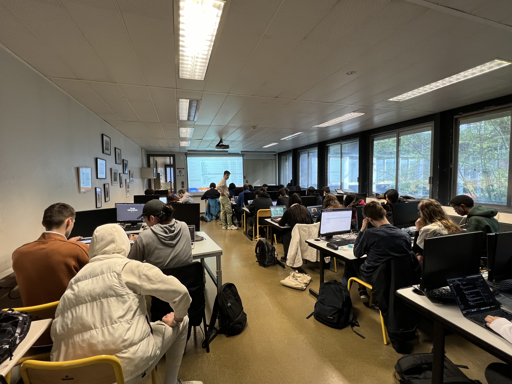
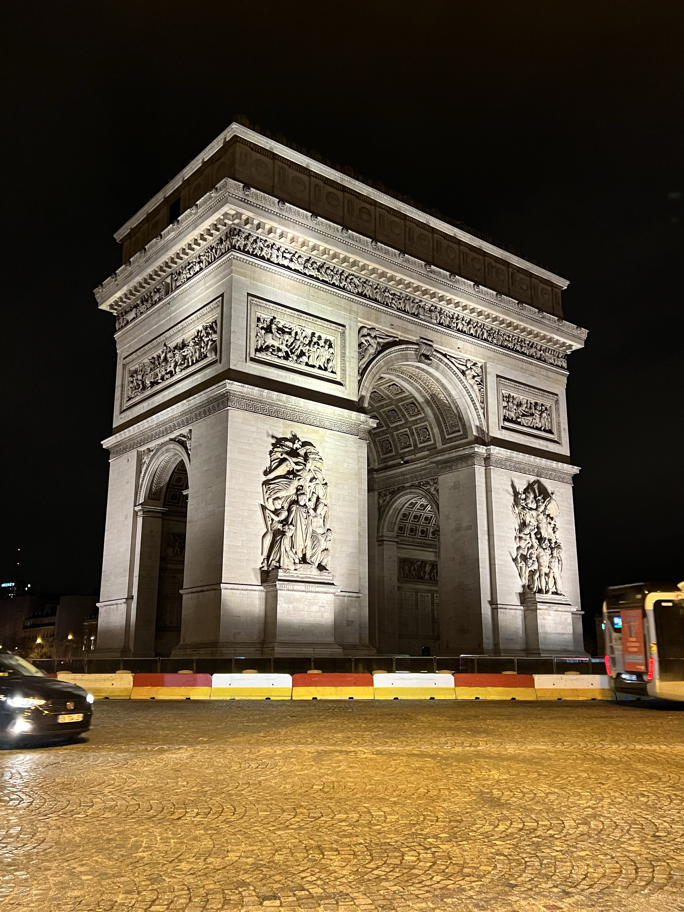
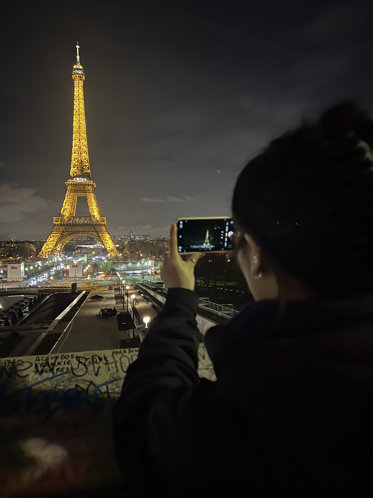
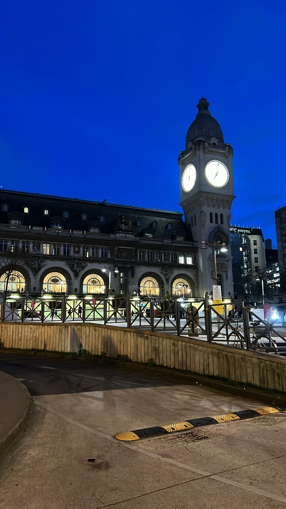
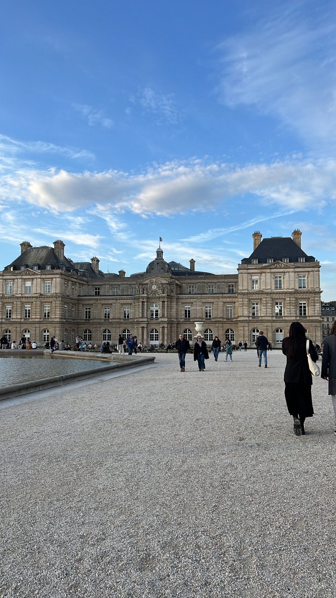
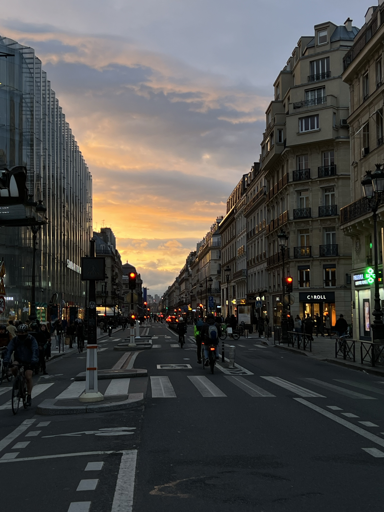

Quick Recap
Thanks to everyone who contributed to the success of this project.
Special thanks to the Vanier College Foundation, Student Services and the Vanier College Student Association for their generous support.
Students have shared their rich social, international and pegagogical experiences. Check them out:
what we did
Week 1, students worked with students from Ireland and Lens, France on a communications project for an event to internationally showcase local history.
Week 2, we collaborated with multimedia students from IUT Lens on producing live Web TV capsules focussing on culture.
Thank you as well to Peter, who also travelled to France and Lens.
Last but far from least, thank you to our friend Virginie, who is an incredibly hard-working, generous and welcoming host.
two exchange options
Lens: a week or 2 near Vimy Ridge
You have the opportunity to do a week-long exchange with students from France, Ireland, Poland and Portugal.
You will work on a web design project with your small group of international students, visit local sites, enjoy local food and travel Europe for the following week.
details
- March 2-13th or 9th-20th TBD
- Transportation:
- Montreal - Paris Charles de Gaulle
- TGV train Paris Gare de l'est - Lens
- Accommodation:
- home stay with a project partner
- all participants will make introduction videos to make teams
- Expenses:
- transportation approximately $1500
- accommodations mostly free, except for your weekend plans
- meals, mostly provided but $200 for those that are not
- plus any costs if you travel early or stay a day or 2 after
- Funding and Fundraising:
- $2790 from the Vanier Foundation
- possibly 55% of airfare from LOJIQ (the project has been accepted conditionally, you just need to sign up)
- last year we raised approximately $200 per student. We can raise even more this year.
- Total Estimated Cost:
- $1500 * 0.45 = $675 (upon approval by LOJIQ)
- $200 for food
- plus any extra trips, shoulder days or incidental expenses.
- Other Details:
- Peter Ng is scheduled to be working with the professors from Europe during the same period.
- Flights & insurance will be purchased through Vanier's International Office and Travel Agent
- Students may travel on their own, booking flights, trains and weekend excursions as you wish.
Vélizy: a semester just outside Paris
The IUT de Vélizy-Rembouillet offers an opportunity to study in their Métiers du Multimédia et de l'Internet (MMI) program.



Here are some preliminary details:
- approximate dates: January (2nd week) to mid-June
- courses will be similar to our courses
- approximate expenses:
- tuition is free, with student fees similar to Vanier
- $1500: flight
- €450 - €550 / month residence (CROUS)
- food & other expenses are similar to Montreal
- financial assistance (nothing is guaranteed):
- $5000: Fédé
- 55% of airfare: LOJIQ
- $2500 Vanier Foundation
- possibility of additional support from the VCSA
- fundraising of up to $1000
Note that while the funding is generous, expenses will often be incurred before you receive the funding. i.e. flight, insurance, fees etc.
how to apply
Let Bruce know you are interested.
Submit a 1-page cover letter, en français, to Bruce at nortonb@vaniercollege.qc.ca by midnight September 15th.
Feel free to ask questions.


